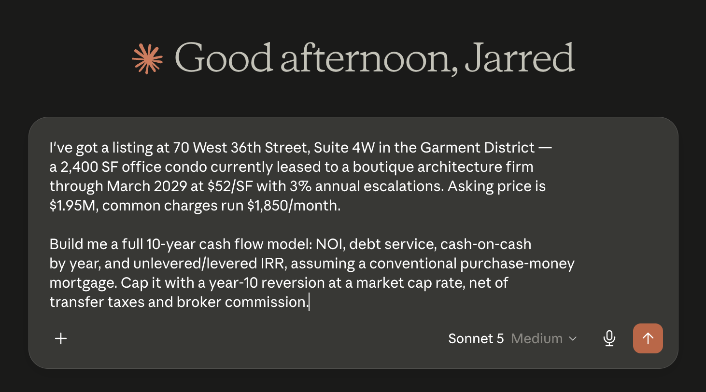
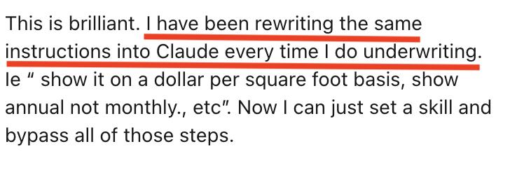
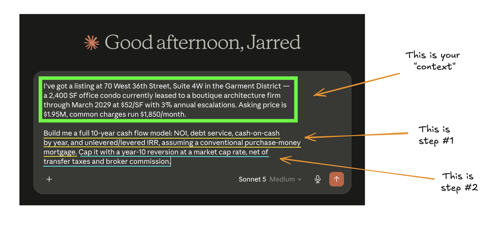

A Claude Skill is a folder with a SKILL.md file that holds your team's context and steps for one job, such as underwriting an office-condo OM. Claude loads it when a request matches its description. Create one in Customize > Skills by asking Claude to draft it, writing it yourself, or uploading a zip. Skills need code execution turned on.
The AI in Real Estate Field Guide puts four applied CRE workflows, an eight-question readiness scorecard and a 30-day pilot plan in one 18-page PDF.
Why does Claude's underwriting change from deal to deal?
Because the process lives in the prompt, and the prompt lives in someone's head. A May 2026 survey by First American Data & Analytics and DealGround of 255 CRE professionals found 66% use AI weekly or daily, but only 5% trust it enough to inform deal decisions. More than half say they use it for support only.
Here is how that looks in practice. A typical underwriting request in Claude:

Nothing is wrong with it. The trouble is that it has to be written again next time, slightly differently, by whoever is at the keyboard. A principal at a New York firm put it to me this way:

Output that changes with the person typing is output nobody can trust with a decision. A Skill fixes the input side of that.
What is a Claude Skill?
A Skill is a reusable set of instructions Claude follows for one kind of task. Every prompt carries two things:
- Context: what Claude needs to know, such as your investment criteria, which source wins when the OM and the rent roll disagree, and the format your team expects.
- Steps: what Claude should do, in order.

A Skill stores both in a Markdown file called SKILL.md, a plain text document. At the top sit a name and a one-line description. Claude reads only that description until a request matches it, then loads the full instructions. That is why the description matters more than anything else in the file. For the file itself, see how to write a SKILL.md that gets used.
How do you create a Skill in Claude?
- Turn on code execution. On a personal plan it is in Settings > Capabilities. On Team and Enterprise, an owner enables it under Organization settings > Plugins & skills.
- Open Customize > Skills, click +, then Create skill.
- Choose a route. Building it with Claude in conversation is the best start: describe the workflow, the property type, the inputs and the deliverable, and Claude drafts the file. Writing the instructions yourself gives full control but is slower. Uploading takes a zip with the skill folder at its root, which is how you install a Skill someone else built.
- Test it on a deal you have already underwritten and compare the result with your analyst's model. Fix the instructions, not the output.
- Share it. On Team and Enterprise plans you can share a Skill with colleagues or publish it to your organization's library, and owners can provision it for everyone.
As of September 2026 there is also a fourth route on Pro, Max and Team plans in Cowork on Mac: record yourself doing the task and Claude builds the Skill from what it observes. Source: Anthropic's help pages on using and creating Skills.
A starting prompt for the Create-with-Claude route:
Help me create a Skill for underwriting [property type] offering memorandums.
Inputs: an OM PDF and our assumptions sheet.
Steps:
1. Extract every figure the OM states, with the page it came from.
2. List what the OM does not cover.
3. Ask me to confirm those assumptions before building anything.
4. Build a ten-year cash flow in Excel with our tab order:
Inputs, Rent Roll, Cash Flow, Returns.
5. Put open questions on the first tab.
Never fill a missing assumption silently.Example: an office-condo underwriting Skill
Our nyc-office-condo-underwriting Skill is free to download. The .skill file is a zip archive; upload it as it is. Every time it runs, Claude follows the same sequence:
- Read the OM and record where each figure came from.
- Identify what the OM does not cover.
- Ask you to confirm the missing assumptions.
- Build the ten-year investor cash flow.
- Deliver the model as an Excel workbook.
What makes it useful is the part a generic prompt leaves out. It tells Claude that common charges replace most of what CAM covers in a whole building, that there is no separate land value in a condo unit, and that the exit carries New York City and New York State transfer taxes, which it must ask about rather than recall, because rates change. It works only from the OM and what you confirm. It does not look anything up.
Use it as a pattern, not as your process. Your Skill should carry your criteria and your template.
What belongs in a CRE Skill, and what does not?
Put in:
- Which source wins when the OM, the rent roll and your own data disagree.
- Your investment criteria and hold assumptions.
- The exact output: file type, tab order, which figures must stay live formulas.
- A stop-and-ask step for anything the documents do not state.
- One worked example of a finished deliverable.
Leave out:
- Figures that change, such as tax rates, interest rates and market rents. Tell Claude to ask for them.
- Licensed data your vendor does not allow in AI tools. See Can Claude connect to CoStar?
- Passwords, API keys and client details that do not need to travel with the method.
Three failure modes we see most: a description too vague to trigger, so Claude never uses the Skill; a Skill that tries to cover all underwriting and ends up generic; and no stop-and-ask step, so Claude fills gaps with plausible numbers.
Where do Skills stop?
A Skill holds the method. It does not reach your systems. Pulling a rent roll from Yardi or logging a contact in your CRM needs a connector, which is Part 2 of this series. The same applies to Rent Manager, AppFolio and Argus: Claude can work with them where the vendor offers a connector or an API you are allowed to use. For the split in general terms, see Claude Skills vs MCP.
Common questions
Which Claude plans include Skills?
As of September 2026, Skills are available on Free, Pro, Max, Team and Enterprise plans, and code execution must be turned on. On Team and Enterprise plans an owner controls Skills in organization settings and can provision a Skill for everyone in the organization.
Do I need to code to build a Claude Skill?
No. A Skill is a Markdown file of instructions with a short name and description at the top. Scripts and reference files are optional. The easiest route is to describe the workflow to Claude, let it draft the Skill, then correct what it gets wrong.
How is a Skill different from a Claude Project?
A Project holds files and instructions for one workspace. A Skill is a packaged method Claude can pick up in any conversation when a request matches its description. Many teams keep the deal files in a Project and the underwriting method in a Skill.
Does ChatGPT have something like Skills?
Yes. As of September 2026 OpenAI is moving custom GPTs to plugins built on Skills, and ChatGPT Enterprise workspaces lose custom GPTs on December 11, 2026 unless an admin has a deferral. The context and steps you write down for one tool carry over to the other.
Can a Skill use CoStar data?
Not as a way around CoStar's terms. CoStar's public Terms of Use bar exposing its licensed product to AI tools outside CoStar and using its data as input to generative AI. Build the Skill on your own material: the OM, your rent roll and your investment criteria.
How many Skills should a CRE team start with?
One. Pick one property type and one output your team already checks, such as a ten-year cash flow for office condos. Test it on three deals you have already underwritten, and add a second Skill only when the first one matches your analysts.
A Skill is the difference between asking Claude to improvise an underwriting process and giving it the playbook your team already trusts.
Continue with the commercial real estate AI workflow hub, or read the original version in the altr'd newsletter on LinkedIn.